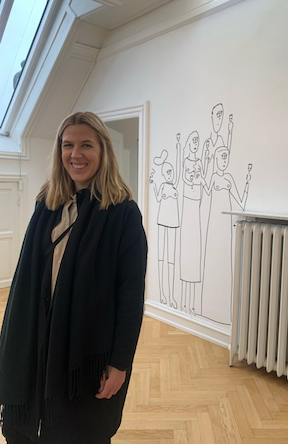

Så vem är jag och vad gjorde jag innan denna utbildning?
Jag är 31 år & bor i Malmö sedan årsskiftet. Bor tillsamamns med min sambo och fästmö Gabriella. Innan det har jag bott i Oslo i 8 år. Där jobbade jag för Norges ledande apotekskedja som arbetsledare på huvudlagret. Jag tar med mig en hel del goda erfarenheter från det jobbet som jag hoppas kan komma till nytta i framtida yrken också. Direkt efter gymnasiet åkte jag iväg som au pair i 2 år. Bodde i Brooklyn, New York och fick en "andra familj" som jag har kontakt med än idag och träffar så ofta jag kan. Tyvärr har pandemin ställt till det men jag håller tummarna för att vara välkommen in i landet i 2022...
Vad gör jag på fritiden?
Jag älskar att umgås med vänner då de ger mig mycket energi på alla sätt och vis. Resten av familjen och släkten bor kvar i Västerås där jag kommer ifrån så dem träffar jag så ofta det går. Har ett stort intresse för mat och dryck så jag gillar att prova nya restauranger och barer! Det är också en anledning till varför jag generellt trivs i storstäder. Jag tycker om blandningen av människor men också möjligheterna och att det finns ett stort utbud av allt. Malmö är speciellt tack vare att man får Köpenhamn "lite på köpet". Och närheten till havet förstås. När jag inte äter asiatiskt eller dricker god öl så ser jag mycket på serier. Älskar att gå på konserter också så det är något jag absolut har saknat under pandemin. Och att resa! Både till storstäder, natur och stränder men också fjäll på vintrarna för skidåkning.
Jeg spiser ikke for å leve, jeg lever for å spise- Det här är ett citat som jag lärde mig av en norsk vän och som jag tyckte var väldigt kul! Det är väldigt passande, och lite ironiskt. Det kan översättas till att man inte äter för att överleva, utan man lever för att äta. Tycker ofta att citat annars kan bli rätt cheesy, så det är inte riktigt min grej.